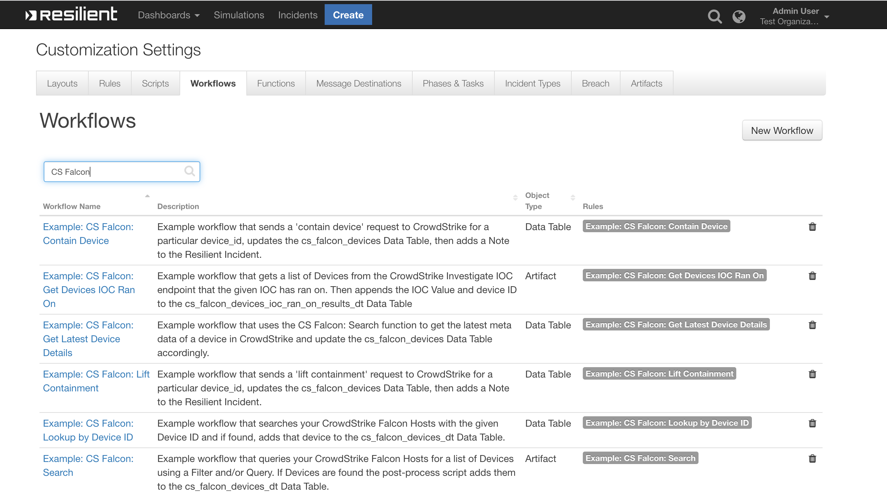
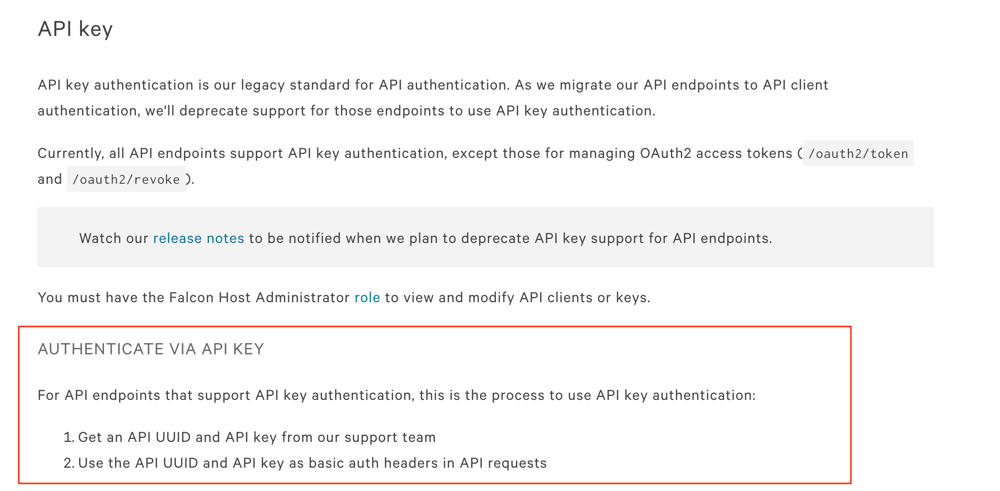
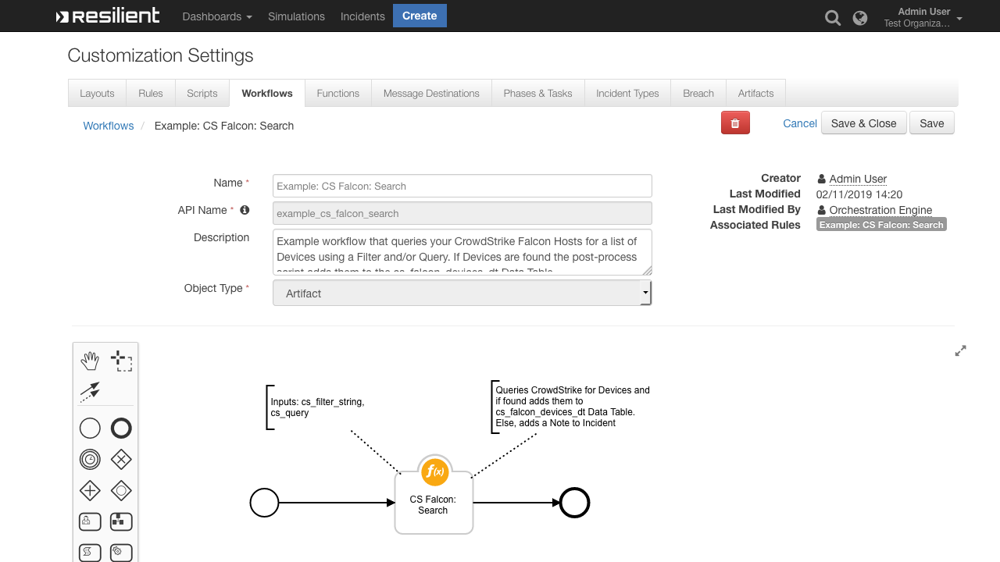
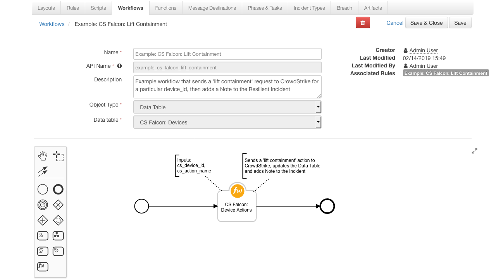
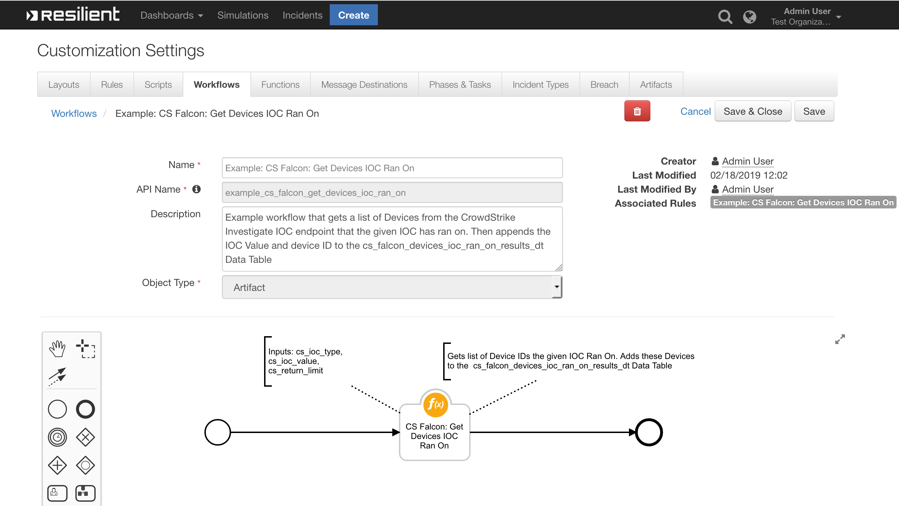
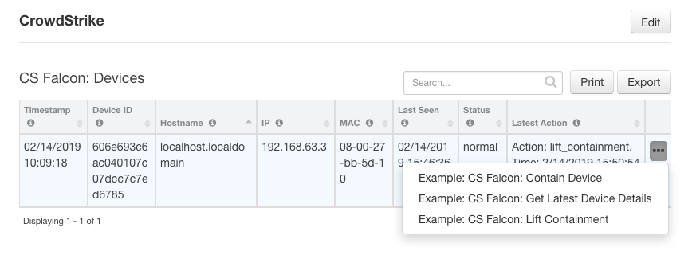
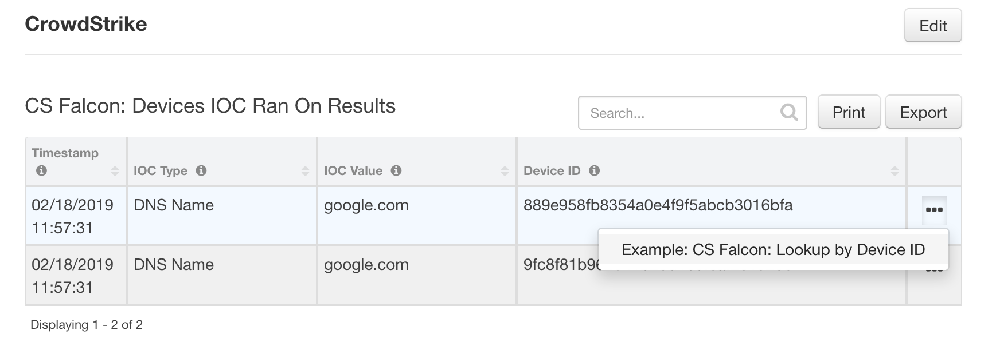

CrowdStrike Falcon¶
Table of Contents¶
This package contains 3 Functions, 6 Workflows, 6 Rules and 2 Data Tables that help you integrate with CrowdStrike Falcon APIs

CS Falcon: Search gives you the ability to search your CrowdStrike Falcon platform for a list of Devices
CS Falcon: Device Actions allows you to ‘contain’ or ‘lift_containment’ on a CrowdStrike device
CS Falcon: Get Devices IOC Ran On returns a list of CrowdStrike devices that the given IOC Ran On
app.config settings:¶
Two different sets of API Keys are need for this Integration with CrowdStrike:
New Keys: CrowdStrike’s API Client Authentication API Keys - based on OAuth2
cs_falcon_oauth2_cidcs_falcon_oauth2_key
Old Keys: CrowdStrike’s API Key Authentication - their legacy authentication standard
cs_falcon_bauth_api_uuidcs_falcon_oauth2_key
Some features rely on the legacy standard while other features have been migrated to work with the new OAuth2 standard
This Integration requires both sets of keys
You can generate and obtain the New Keys from the CrowdStrike Console. Information on how to do this can be found in the CrowdStrike documentation under the heading Authenticate via API client
As for the Old Keys, you need to contact CrowdStrike Support directly to obtain them: 
Also, the
base_urlmay be different depending on your environment. Below are the commonbase_urlsused for each set of credentials
[fn_crowdstrike_falcon]
# API Client Authentication, CrowdStrike's newer standard based on OAuth2
cs_falcon_oauth2_base_url=https://api.crowdstrike.com
cs_falcon_oauth2_cid=<YOUR CROWDSTRIKE CLIENT ID>
cs_falcon_oauth2_key=<YOUR CROWDSTRIKE OAUTH2 KEY>
# API Key Authentication, CrowdStrike's legacy authentication standard
cs_falcon_bauth_base_url=https://falconapi.crowdstrike.com
cs_falcon_bauth_api_uuid=<YOUR CROWDSTRIKE UUID>
cs_falcon_bauth_api_key=<YOUR CROWDSTRIKE API KEY>
# Number of seconds to wait before next device-action request to CrowdStrike. Default=5
cs_falcon_ping_delay=5
# Max number of seconds to wait to get device-action response from CrowdStrike. Default=120
cs_falcon_ping_timeout=10
Function - CS Falcon: Search¶
Queries your CrowdStrike Falcon Hosts for a list of Devices using a Filter and/or Query. If Devices are found they are returned as a Python List

Inputs:¶
Name |
Type |
Required |
Example |
Info |
|---|---|---|---|---|
|
|
No |
|
See: https://falcon.crowdstrike.com/support/documentation/2/query-api-reference#devicesearch for filter syntax |
|
|
No |
|
This query searches the meta data of devices after applying the above filter. Here it would search all fields for “JohnsMacBook” |
Output:¶
results = {
"success": True,
"reason": None,
"version": "1.0",
"metrics": {
"package": "fn-crowdstrike-falcon",
"timestamp": "2019-02-11 13:23:43",
"package_version": "1.0.0",
"host": "localhost",
"version": "1.0",
"execution_time_ms": 1619
},
"inputs": {
"cs_query": None,
"cs_filter_string": "hostname:'localhost*'"
},
"content": [{
"modified_timestamp": 1549891335000,
"config_id_platform": "8",
"system_manufacturer": "innotek GmbH",
"meta": {
"version": "295"
},
"first_seen": 1549548472000,
"platform_id": "3",
"local_ip": "192.168.63.3",
"hostname": "localhost.localdomain",
"config_id_build": "6703",
"minor_version": "10",
"os_version": "CentOS 7",
"provision_status": "Provisioned",
"mac_address": "0-0-0-0-0",
"bios_version": "VirtualBox",
"agent_load_flags": "0",
"status": "normal",
"bios_manufacturer": "innotek GmbH",
"product_type_desc": "Server",
"device_policies": {
"sensor_update": {
"applied": True,
"applied_date": "2019-02-07T14:09:24.94667175Z",
"settings_hash": "65994753|8|2|automatic",
"policy_type": "sensor-update",
"assigned_date": "2019-02-07T14:09:24.946671267Z",
"policy_id": "4eac5ba86b27414098820732fe7876f6"
},
"prevention": {
"applied": True,
"applied_date": "2019-02-08T14:47:54.526691595Z",
"settings_hash": "d4cbb29",
"policy_type": "prevention",
"assigned_date": "2019-02-08T14:47:47.25675937Z",
"policy_id": "25291d90954c476d86c6fb2db38d7d72"
}
},
"agent_local_time": 1549859544549,
"slow_changing_modified_timestamp": "2019-02-11T13:22:15Z",
"device_id": "606e693c6ac040107c07dcc7c7ed6785",
"system_product_name": "VirtualBox",
"cid": "b1e43228990c4bfe8e979969d955b800",
"external_ip": "0.0.0.0",
"major_version": "3",
"platform_name": "Linux",
"config_id_base": "65994753",
"policies": [{
"applied": True,
"applied_date": "2019-02-08T14:47:54.526691595Z",
"settings_hash": "d4cbb29",
"policy_type": "prevention",
"assigned_date": "2019-02-08T14:47:47.25675937Z",
"policy_id": "25291d90954c476d86c6fb2db38d7d72"
}],
"agent_version": "4.21.6703.0",
"last_seen": 1549891334000
}]
}
Pre-Process Script:¶
This example uses the Artifact Value to create the cs_filter_string
# Example: "hostname:'sampleName*'+platform_name:'Windows'" ==> Searches CrowdStrike for devices who's hostname contains 'sampleName' and platform is 'Windows'
inputs.cs_filter_string = u"hostname:'{0}*'".format(artifact.value)
# This query searches the meta data of devices after applying the above filter
inputs.cs_query = "JohnsMacBook"
Post-Process Script:¶
This post-process loops each found device and adds its details to the cs_falcon_devices_dt Data Table
# Import Date
from java.util import Date
# If the function found some devices
if results.success:
# Get the current time
dt_now = Date()
# For each device, add a row to the cs_falcon_devices_dt
for device in results.content:
new_row = incident.addRow("cs_falcon_devices_dt")
new_row.timestamp = dt_now
new_row.device_id = device.device_id
new_row.hostname = device.hostname
new_row.ip = device.local_ip
new_row.mac = device.mac_address
new_row.last_seen = device.last_seen
new_row.status = device.status
else:
# Else, no devices found, add Note to Incident with reason
incident.addNote(results.reason)
Function - CS Falcon: Device Actions¶
Function that uses the CrowdStrike Falcon ‘/devices/entities/devices-actions/’ endpoint to Contain or Lit Containment on a Device
Sends the
containorlife_containmentrequest to CrowdStrike.Then pings every x seconds to get the
device_statusEnds when the
device_statusisnormalorcontainedor when the request times out
Contain Device:

Lift Containment:

Inputs:¶
Name |
Type |
Required |
Example |
Info |
|---|---|---|---|---|
|
|
Yes |
|
This is a unique ID CrowdStrike Falcon assigns all its devices |
|
|
Yes |
Select Options: |
The name of the action to run on the device. Currently the CrowdStrike Falcon APIs support ‘contain’ and ‘lift_containment’. See https://assets.falcon.crowdstrike.com/support/api/swagger.html for more |
Output:¶
results = {
"success": True,
"reason": None,
"version": "1.0",
"inputs": {
"cs_device_id": "606e693c6ac040107c07dcc7c7ed6785",
"cs_action_name": "contain"
},
"metrics": {
"package": "fn-crowdstrike-falcon",
"timestamp": "2019-02-11 13:42:16",
"package_version": "1.0.0",
"host": "localhost",
"version": "1.0",
"execution_time_ms": 3920
},
"content": {
"meta": {
"query_time": 0.725871979,
"trace_id": "349764c9-721f-4a90-bc48-74d793c0e151",
"powered_by": "device-api"
},
"device_id": "606e693c6ac040107c07dcc7c7ed6785",
"device_status": "contained"
}
}
Pre-Process Script:¶
This example is using a Workflow with a Data Table Object Type. Therefore it can get the device_id from the row this Rule was invoked on
# Set the unique CrowdStrike device_id. Taken here from the CS Falcon: Devices Data Table
inputs.cs_device_id = row.device_id
# inputs.cs_action_name is a select field and is set to "contain" in the Workflow's Input tab
Post-Process Script:¶
This post-process creates a formatted timestamp, updates the Data Table and adds a Note to the Incident
# Import Date
from java.util import Date
def get_formatted_timestamp():
"""Function that returns the current Resilient Appliance time in the format: mm/dd/yyyy hh:mm:ss"""
dt = Date()
return u"{0}/{1}/{2} {3}:{4}:{5}".format(
dt.getMonth() + 1, dt.getDate(), dt.getYear() + 1900, dt.getHours(), dt.getMinutes(), dt.getSeconds())
# If the function successfully sent a "contain device" request to CrowdStrike, updated the Data Table and add a Note to the Incident
if results.success:
# Get the current time in the format 'mm/dd/yyyy hh:mm:ss'
formatted_date = get_formatted_timestamp()
# Generate the value we want to update the cell to
latest_action_text = u"Action: {0}. Time: {1}".format(unicode(workflow.properties.cs_action.inputs.cs_action_name), formatted_date)
# Update the latest_action Data Table cell
row.latest_action = latest_action_text
# Update the device_status Data Table cell
row.status = results.content.device_status
note_text = """<br><b>device-action request sent to CrowdStrike</b>
<br><b>Action:</b> {0}
<br><b>Device ID:</b> {1}
<br><b>Device Status:</b> {2}""".format(results.inputs.cs_action_name, results.content.device_id, results.content.device_status)
incident.addNote(helper.createRichText(note_text))
Function - CS Falcon: Get Devices IOC Ran On¶
Queries your CrowdStrike Falcon Hosts with a String Representation of an IOC and returns a list of Device IDs that the IOC Ran On

Inputs:¶
Name |
Type |
Required |
Example |
Info |
|---|---|---|---|---|
|
|
Yes |
|
Normally set using the |
|
|
Yes |
|
Normally set using the |
|
|
No |
|
Sets the max number of devices to return from the request |
Output:¶
results = {
'version': '1.0',
'success': True,
'reason': None,
'inputs': {
'cs_ioc_type': 'DNS Name',
'cs_ioc_value': 'google.com',
'cs_return_limit': None
},
'metrics': {
'package': 'fn-crowdstrike-falcon',
'timestamp': '2019-02-18 13:32:52',
'package_version': '1.0.0',
'host': 'localhost',
'version': '1.0',
'execution_time_ms': 930
},
'content': {
'meta': {
'query_time': 0.046912103,
'entity': '/devices/entities/devices/v1{?ids*}',
'pagination': {
'limit': 100,
'offset': ''
},
'trace_id': '676d1be7-4d96-4ba0-ae6c-dd8aaae30c54'
},
'device_ids': [
'889e958fb8354a0e4f9f5abcb3016bfa',
'9fc8f81b962541b26d1e0feaf2c1523e'
]
}
}
Pre-Process Script:¶
This example uses the Artifact Value and Type properties when defining the inputs
# Set the ioc type
inputs.cs_ioc_type = artifact.type
# Set the ioc value
inputs.cs_ioc_value = artifact.value
# Set the max number of devices to return
# inputs.cs_return_limit = 10
Post-Process Script:¶
This post-process loops each device_id found and adds its details to the
cs_falcon_devices_ioc_ran_on_results_dtData TableIf no devices were found for the IOC or an error occurred, a Note is added to the Incident with the reason why
# Import Date
from java.util import Date
# If the function found some devices
if results.success:
# Get the current time
dt_now = Date()
# For each device, add a row to the cs_falcon_devices_dt
for device_id in results.content.device_ids:
new_row = incident.addRow("cs_falcon_devices_ioc_ran_on_results_dt")
new_row.timestamp = dt_now
new_row.ioc_type = results.inputs.cs_ioc_type
new_row.ioc_value = results.inputs.cs_ioc_value
new_row.device_id = device_id
else:
# Else, the function did not get any devices. Add a note with the reason why
incident.addNote(results.reason)
Rules¶
Rule Name |
Object Type |
Conditions |
Workflow Triggered |
|---|---|---|---|
Example: CS Falcon: Search |
|
|
|
Example: CS Falcon: Contain Device |
|
|
|
Example: CS Falcon: Lift Containment |
|
|
|
Example: CS Falcon: Get Latest Device Details |
|
|
|
Example: CS Falcon: Get Devices IOC Ran On |
|
|
|
Data Tables¶
CS Falcon: Devices¶

API Name:¶
cs_falcon_devices_dt
Columns:¶
Column Name |
API Access Name |
Type |
Info |
|---|---|---|---|
Timestamp |
|
|
Timestamp when this entry was added |
Device ID |
|
|
Unique CrowdStrike ID for the Device |
Hostname |
|
|
Hostname of the Device |
IP |
|
|
Local IP Address of the Device |
MAC |
|
|
MAC Address of the Device |
Last Seen |
|
|
Datetime the Device was Last Seen |
Status |
|
|
The Containment Status of the Device |
Latest Action |
|
|
Name of the latest CrowdStrike action to run on this device |
CS Falcon: Devices IOC Ran On Results¶

API Name:¶
cs_falcon_devices_ioc_ran_on_results_dt
Columns:¶
Column Name |
API Access Name |
Type |
Info |
|---|---|---|---|
Timestamp |
|
|
Timestamp when this entry was added |
IOC Type |
|
|
The IOC Type |
IOC Value |
|
|
String Representation of the IOC |
Device ID |
|
|
The unique CrowdStrike ID of the Device |
Display a Data Table in an Incident¶
In order to display the Test Data Table in your Incident, you must modify your Layout Settings
Go to Customization Settings > Layouts > Incident Tabs > + Add Tab

Enter Tab Text:
My Test Taband click Add

Drag the Data table into the middle and click Save

Create a new Incident and you will now see the My Test Tab with the Test Data Table